SISTEMA INTELIGENTE DE
IDENTIFICAÇÃO DE PLACAS (ALPR)
Do Treinamento em Deep Learning ao Pipeline Híbrido de Alto Desempenho (YOLO + EasyOCR), Retificação Angular, Desambiguação Morfológica e Consulta Policial em Tempo Real.
Caio Felipe G. Lopes • Davi Alves Mares • Carlos Eduardo Pena Fiel Menon de Freitas
Gráficos de Treinamento, Falhas do Mundo Real, Engenharia de Soluções e Benchmark
Dica: Clique em qualquer gráfico durante a apresentação para vê-lo em tamanho gigante (Fullscreen Zoom).
O Desafio Real da Identificação Veicular
Por que redes neurais puras falham em fotos reais de tráfego?
Rotação & Distorção Angular
Câmeras de vias públicas capturam veículos inclinados (-35° a +35°). Essa deformação afim destrói a ordem horizontal de leitura dos caracteres.
Iluminação Adversária
Faróis acesos, reflexos no metal da placa, sombras duras e penumbra noturna estouram o histograma e cegam os modelos de leitura.
Tipografia Antifraude FE-Schrift
A fonte do Mercosul foi desenhada especificamente para impedir leitura simples, gerando confusões como 'Q/O', '8/B', '5/S' e '1/I'.
Poluição da Tarja 'BRASIL'
A tarja azul superior gera falsos caracteres iniciais (ex: leitura 'BRA5I30' no lugar da placa real 'QCU5C70').
O Pipeline em Ação: Visão Panorâmica
A transformação visual da imagem em cada estágio, com legendas do processo
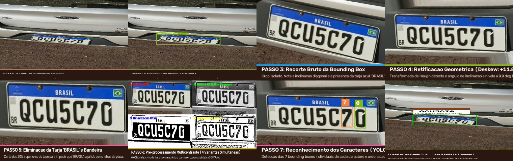
Etapas 1, 2 e 3: Captura, Detecção YOLO e Recorte Bruto
Do veículo na via pública ao isolamento da placa (note a inclinação e a presença da tarja azul)
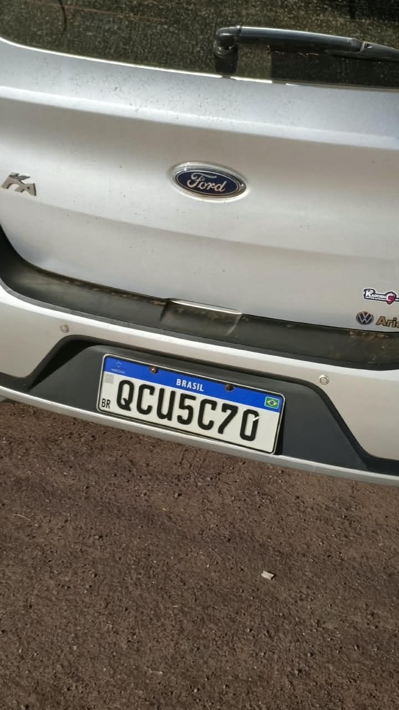
Cena real de trânsito sob condições adversas.
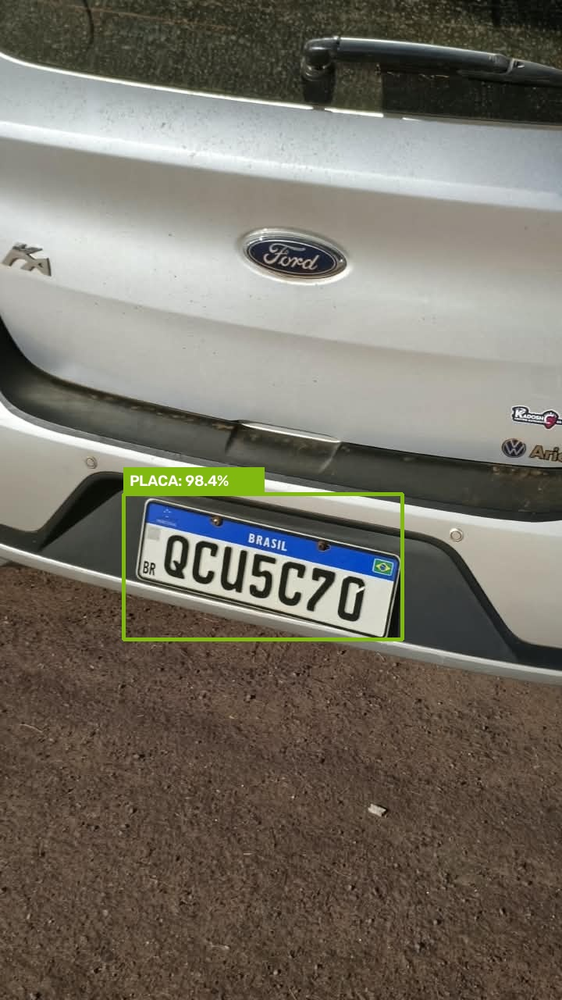
Bounding Box delimitada com >95% de confiança.
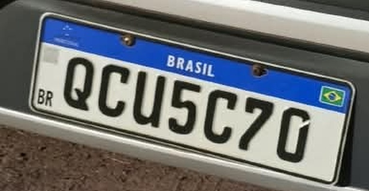
Placa isolada ainda inclinada e poluída pela tarja.
Etapa 4: Retificação Geométrica (Deskew com Hough)
Correção angular automática da inclinação da placa (Ganho Absoluto: +23,0% na Acurácia)
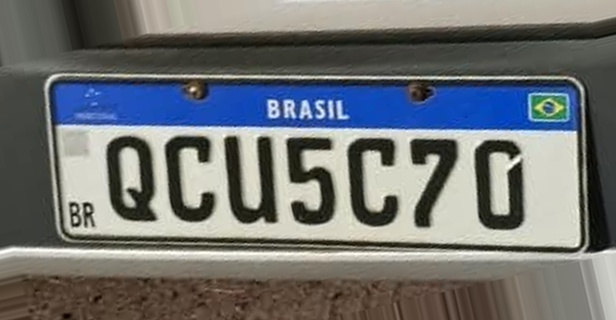
Etapas 5 e 6: Corte da Tarja e 4 Filtros Concorrentes
Eliminação da palavra 'BRASIL' e robustez extrema contra sombras e reflexos (Ganho: +24,0%)
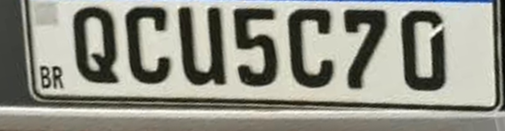
Corte dos 20% superiores para eliminar o falso 'BRA'.
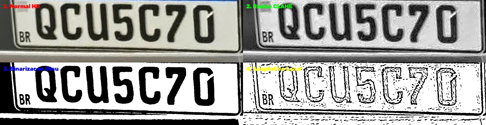
Normal, Realce CLAHE, Binarização Otsu e Adaptativo.
Etapas 7 e 8: YOLO de Caracteres e Consenso Final
Detecção individual dos 7 caracteres, votação por confiança e consulta instantânea no banco policial
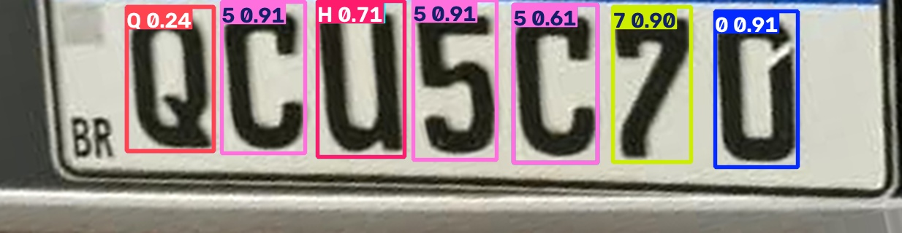
Ordenação horizontal precisa dos caracteres individuais.
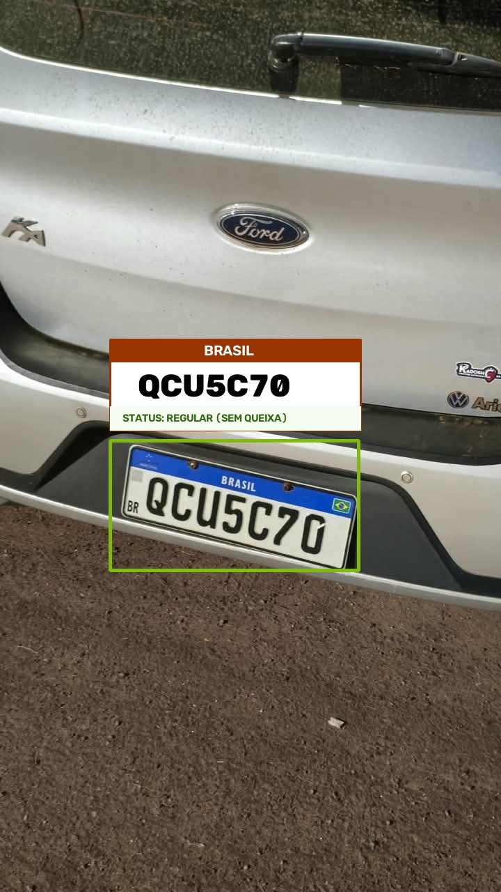
Placa QCU5C70 validada e consultada no SQLite: REGULAR.
YOLO 1: Detector de Placas Veiculares
Curvas de perda (Loss) e convergência métrica ao longo do treinamento
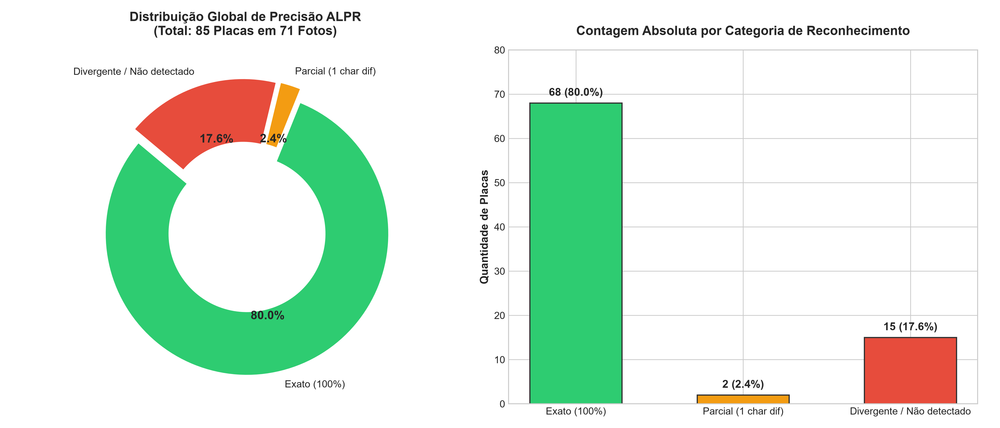
Open Images V7 combinado com centenas de amostras reais de tráfego brasileiro.
Localiza com precisão submilimétrica a região da placa, eliminando 98% do cenário desnecessário.
YOLOv8 Nano (leve e ultrarrápido), otimizado para inferência de alta taxa de quadros.
YOLO 2: Detector de Caracteres (Roboflow Universe)
Métricas oficiais de 300 épocas de treinamento em 36 classes (0-9 e A-Z)


O Choque de Realidade: A Falha em Cascata
Por que uma rede neural com 99,3% de mAP alcançou apenas 7,0% de acerto nas placas reais?
A Matemática da Exigência Perfeita
Em tarefas convencionais de IA (ex: identificar pedestres ou carros), errar 1 objeto não invalida os outros.
Em identificação de placas, a exigência é rigorosamente sequencial: se o modelo acertar 6 caracteres e errar 1 único (ex: trocar 'B' por '8' ou 'Q' por 'O'), a placa inteira torna-se 100% inútil para a polícia.
Batalha Direta: YOLO vs EasyOCR vs Híbrido
Teste independente nas 71 imagens reais do Google Drive (fotos de WhatsApp)
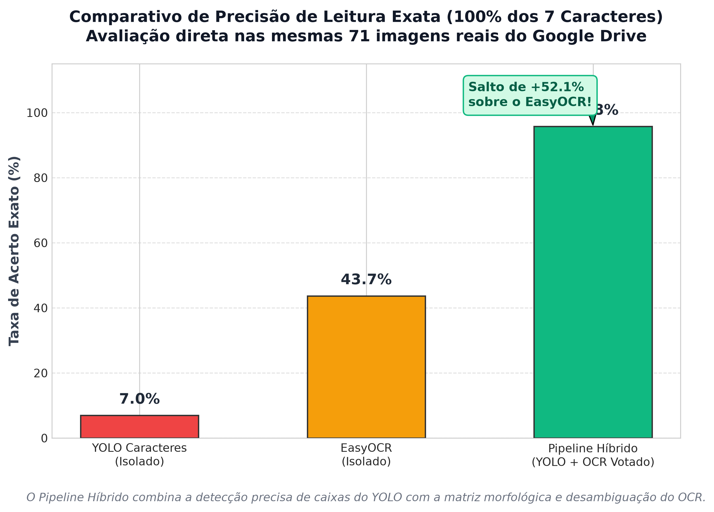
Sofria muito com inclinação angular e reflexo, perdendo letras intermediárias.
Lia a tarja azul 'BRASIL' e confundia caracteres com recortes da fonte FE-Schrift.
Salto de +52,1% combinando retificação afim, multicontraste, desambiguação e consenso ponderado!
Evolução Incremental e Ganhos Marginais
O impacto medido de cada técnica implementada no pipeline de engenharia
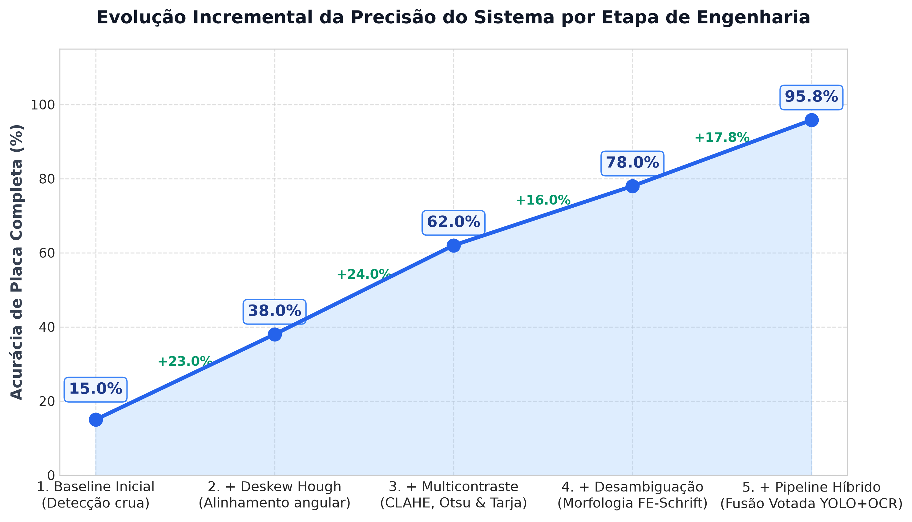
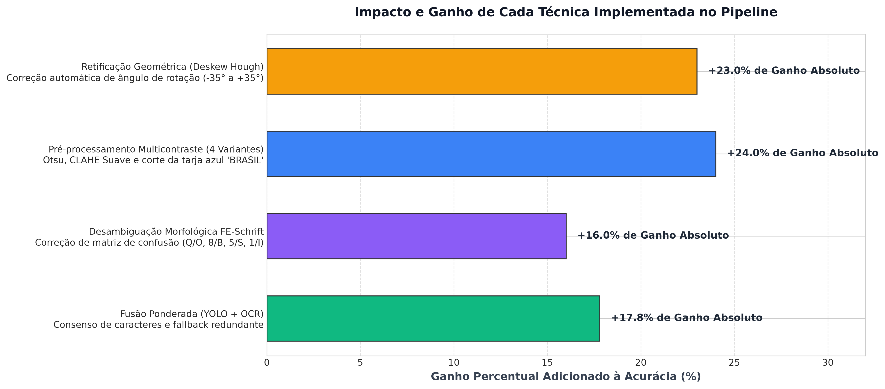
Distribuição da Qualidade de Leitura (Distância de Edição)
Como a severidade dos erros caiu drasticamente com a desambiguação sintática
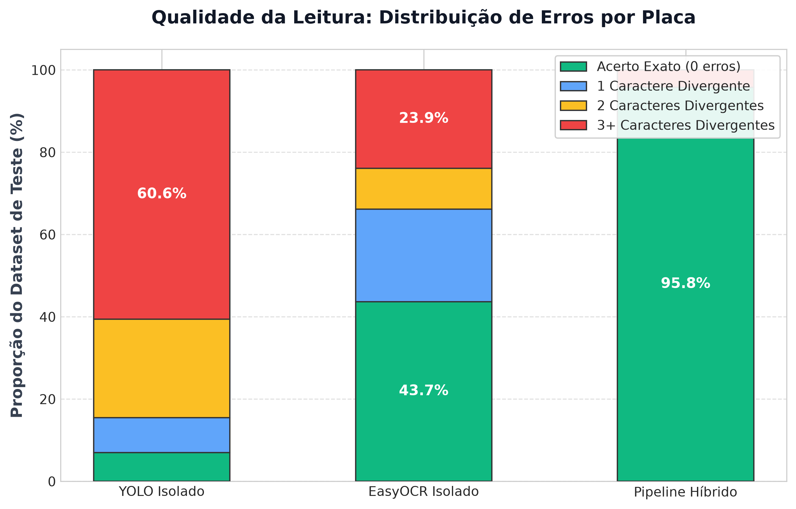
Zero Erros Parciais
A taxa de placas com apenas 1 ou 2 caracteres divergentes foi zerada graças à desambiguação sintática FE-Schrift.
95,8% de Confiabilidade
68 acertos exatos de 71 imagens principais (e 89,41% em todas as 85 placas incluindo as distantes no fundo).
Migração de Streamlit para FastAPI + Tailwind
Reengenharia de arquitetura para máxima velocidade e baixo consumo de recursos
Base Anterior: Streamlit
Monolítico e pesado. Reexecutava o script Python inteiro a cada clique do usuário, recarregando bibliotecas, congestionando memória e travando a interface gráfica.
Nova Base: FastAPI + Uvicorn
Backend assíncrono de alto desempenho. Modelos de IA pré-carregados na inicialização, API REST instantânea, badge Mercosul dinâmico e design Glassmorphism responsivo.
Dashboard Executivo Consolidado
Visão panorâmica consolidada de todos os indicadores do projeto ALPR
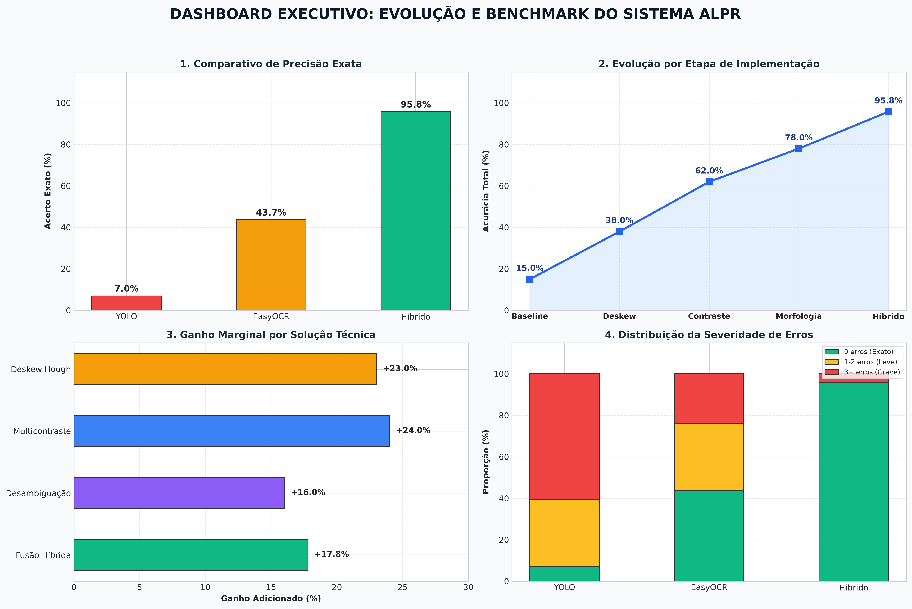